-
1978두산연강재단 설립'국가 발전의 원동력은 교육에서부터 시작된다'는
故 연강 (蓮崗) 박두병 (朴斗秉) 두산그룹 초대회장의
유지를 기리기 위해 연강학술재단을 창립했습니다.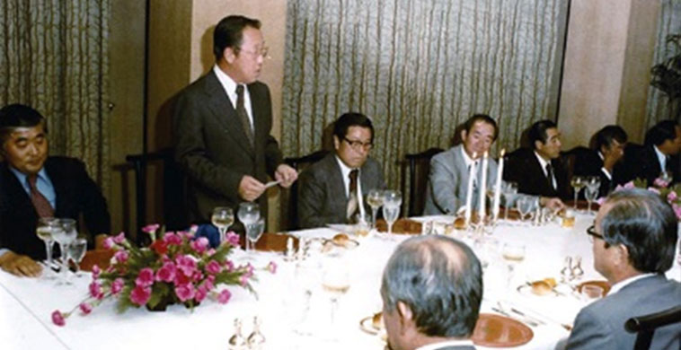
-
1979제1회 장학증서 수여식 개최32개교 199명의 학생들을 시작으로, 어려운 환경 속에서도
성적이 우수한 장학생들을 선발하여 장학증서 수여식을
개최하고 장학금 지급을 시작했습니다.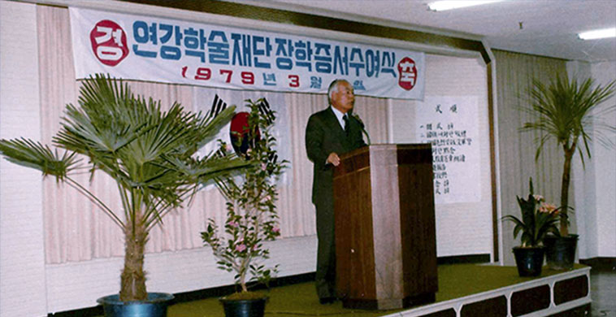
-
1988뉴질랜드 오클랜드대학 한국어학과 개설우리 언어와 문화를 세계에 널리 알리기 위해 민간 최초로
뉴질랜드 오클랜드 대학에 한국어과 신설을 시작으로, 뉴욕,
바르셀로나, 중국, 루마니아 등 여러 해외대학의 한국학 연구
지원을 시작했습니다.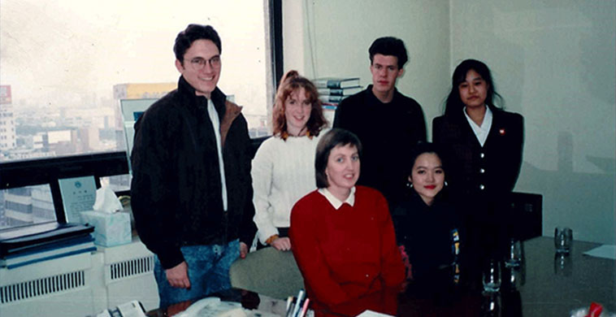
-
1989해외 도서 보내기 사업 신설중국, 러시아를 비롯한 해외에 거주하는 우리 동포들의
민족 자긍심을 높이기 위해 국내 최초로
한글 교과서, 사전 및 단행본을 보내는 사업을 시작했습니다.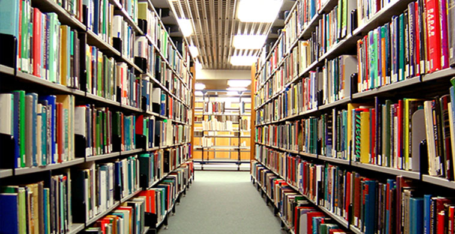
-
1989제1회 역사·사회교사 해외학술시찰 개시생생한 역사 체험을 통해 교사들이 민족에 대한 긍지와
자부심을 느끼고, 자라나는 2세들에게 올바른 역사 의식을
심어주는 데 도움을 주기 위해 역사·사회 교사 대상
해외학술시찰사업을 시작했습니다.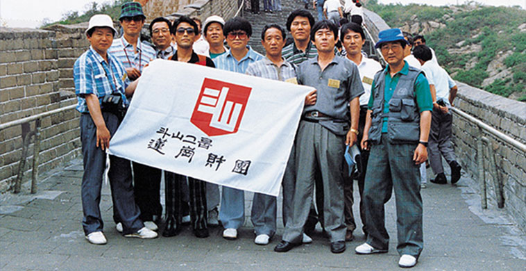
-
1990오클랜드대 학생
연세대 한국어학당 유학 지원오클랜드대학 한국어과 학생들의
한국어 능력 향상을 위해 장학생을 선발하여
연세한국어학당 연수비 전액을 지원하였습니다.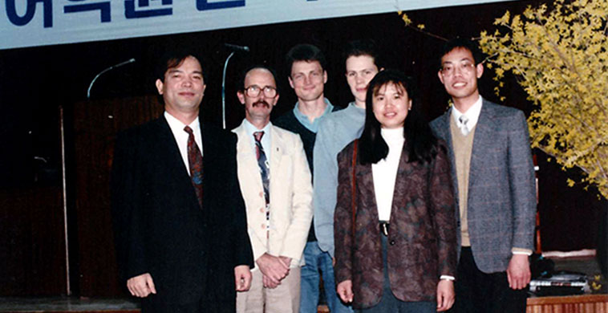
-
1992중국학 연구원 지원사업 신설급속도로 성장하며 세계 경제 흐름을 재편하고 있는
중국에 대한 보다 깊은 이해를 위해,
중국학 연구원을 선발하여 지원하기 시작했습니다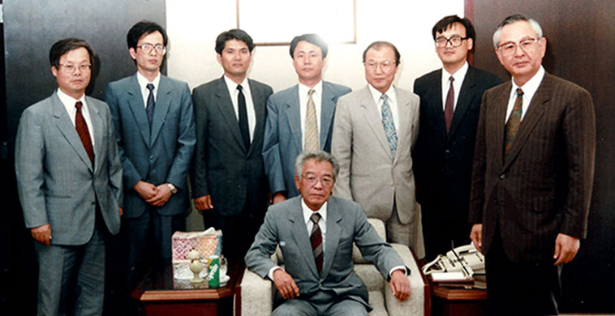
-
1993두산연강환경학술연구비 지원 개시살기 좋은 환경을 만들기 위해 노력하는
연구자들에게 도움이 되고자 환경 분야의 교수들을
대상으로 연구비를 지원하기 시작했습니다.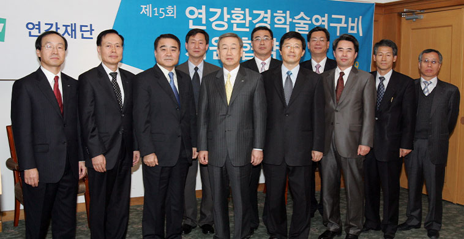
-
1993연강홀 개관두산 창업 100주년 사업의 일환으로 1993년 5월에
연강홀을 개관했습니다. 복합공연장으로 공연문화
수준 향상을 위한 프로그램을 선보였습니다.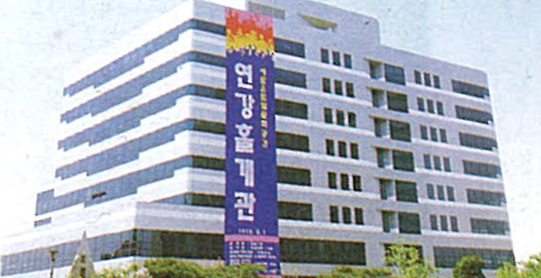
-
2006두산가족장학금(두산꿈나무장학금) 신설어려운 상황에서도 꿋꿋이 생활하는 소년소녀가장인
초등학생 및 중학생을 선발하여 중학교를 졸업할 때까지
지속적으로 장학금을 지원하는 사업을 시작했습니다.제1회 두산가족(두산꿈나무) 초청행사 개최연 1회 두산가족(두산꿈나무) 장학생 중 초등학생과
두산그룹 임직원을 1:1로 연계하여 야외학습체험을 하는
두산가족(두산꿈나무) 초청행사를 시작했습니다.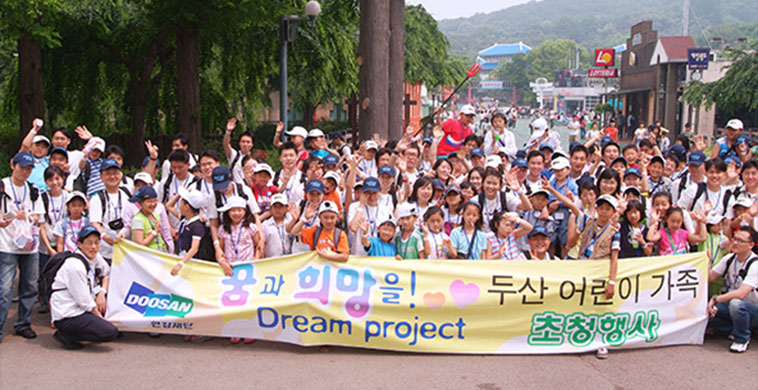
-
2006두산연강학술상 의학논문부문 제정우리나라 의학 발전을 기원하고 젊은 의학도들의 연구
의욕을 높이기 위해 두산연강학술상을 제정했습니다.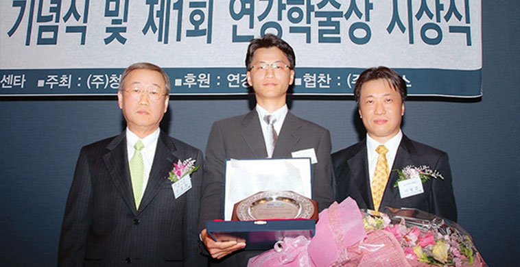
-
2006도서벽지학교 맞춤식 도서지원사업 개시독서를 통해 어린이들에게 창의력과 지혜를 심어 주고자,
도서ㆍ벽지 소재 초등학교에 도서를 지원하기 시작했습니다.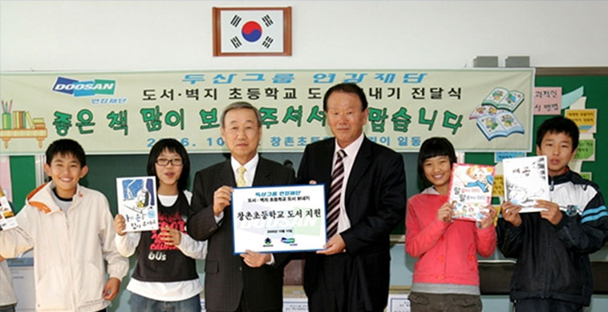
-
2006특별재해장학금 신설재해로 인해 큰 피해를 입은 지역의 학생들이
학업을 계속할 수 있도록 재해 발생 지역을
파악하여 해당 지역 학생들에게 장학금을
지원하는 사업을 시작했습니다.
-
2007과학교사 학술시찰 개시국가 발전의 기반이 되는 과학영재 양성에 기여하고자
‘올해의 과학교사상’ 수상자 전원에게 국내외 과학
관련 시설 및 현장을 시찰할 수 있는 기회를 제공하는
과학교사 학술시찰사업을 시작했습니다.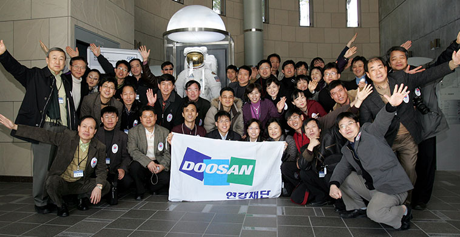
-
2007방과후 학교 저소득층 자녀 지원사업 신설저소득층의 사교육비 부담을 줄이고 교육 복지 실현에
기여하고자 저소득층 자녀들을 위한 방과후학교의
‘초등돌봄교실’ 지원 사업을 신설했습니다.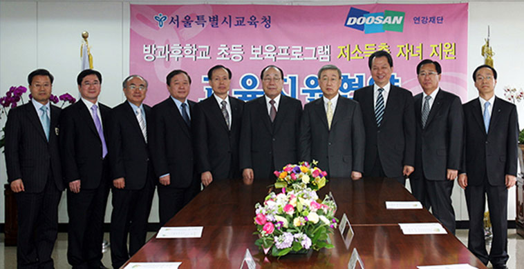
-
2007해외한국학교 도서 지원 개시1989년부터 진행된 해외동포 도서 보내기 사업을
개편하여 외국 소재 한국학교에
맞춤식 도서지원사업을 시작했습니다.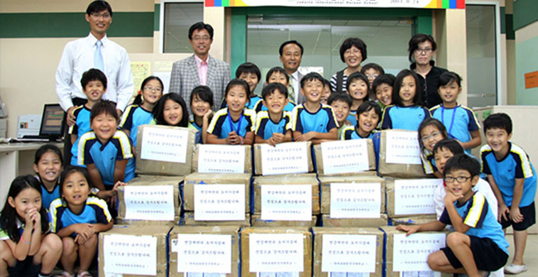
-
2007전국어린이병원학교 맞춤식
도서 지원 개시투병으로 인해 정상적으로 학교를 다니지 못하는
학생들을 위해 세워진 전국의 어린이병원학교에 맞춤식
도서를 지원하는 사업을 시작했습니다.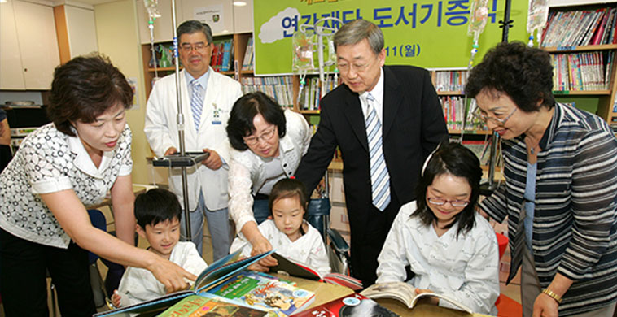
-
2007두산아트센터 개관두산 창립 111주년을 기념해 2007년 10월에 새롭게
문을 열었습니다. 연강홀, Space111, 두산갤러리에서
젊은 예술가들의 새로운 시도를 응원합니다.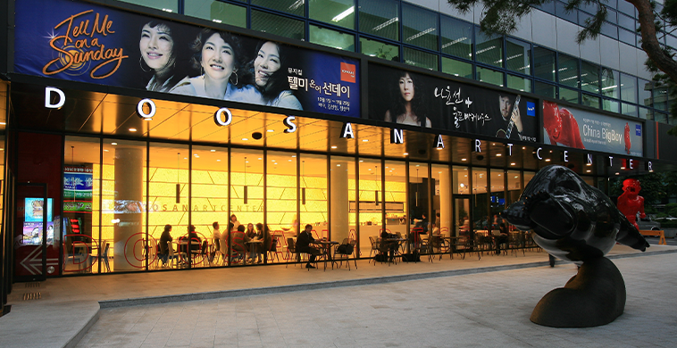
-
2007두산연강외과학술상 제정우리나라 외과학 부문의 발전을 위해
두산연강외과학술상을 신설했습니다.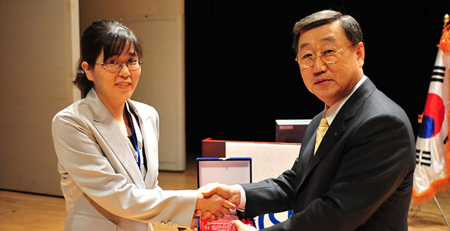
-
2008두산체육꿈나무 장학금 신설학교 체육을 활성화시키고 체육 꿈나무를 조기 발굴,
육성하기 위하여 열악한 환경에 있는 비인기
종목 및 기초 종목 육성 학교와 체육 꿈나무들에게
장학금을 지원하기 시작했습니다.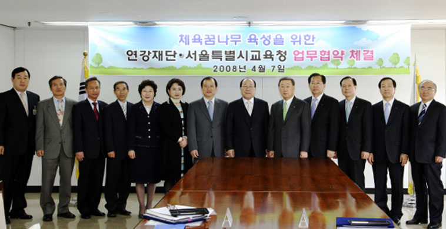
-
2008미국 미네소타 한국어마을 지원세계에서 유일한 한국어 마을인 미국 미네소타의
‘숲속의 호수’를 지원하기 시작했습니다. -
2008DAC Artist(前 두산아트센터 창작자육성 프로그램) 시작공연예술 분야의 젊은 예술가들을 발굴,
선정하여 창작활동을 지원합니다.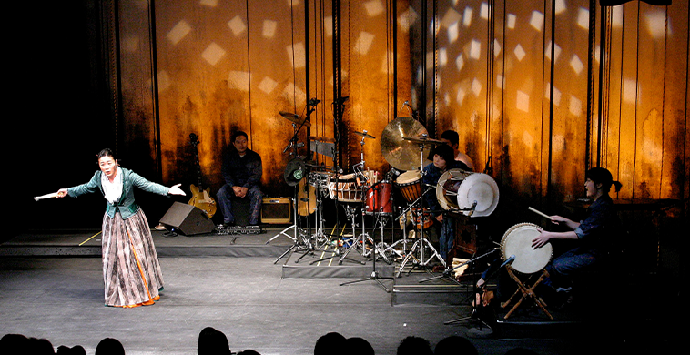
-
2008두산아트스쿨 시작현대미술, 공연예술 현장에 대한 무료 강연과
예술창작 워크숍을 진행합니다.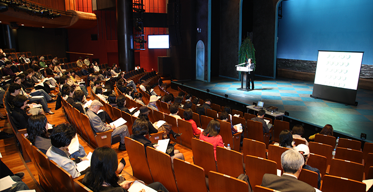
-
2009두산갤러리, 두산레지던시 뉴욕 신설현대미술의 중심지인 뉴욕 첼시에 두산갤러리와
두산레지던시를 마련해 한국 작가들을 해외에 소개하고
지속적인 작품활동에 도움이 되고자 합니다. -
2010두산연강예술상 제정인재양성에 힘써온 두산 초대회장 연강 박두병 선생의
뜻을 이어 2010년 제정, 미술과 공연 분야에서 독자적인
세계를 구축하고 새로운 흐름을 만들어가는 만 40세 이하
예술가들을 지원합니다.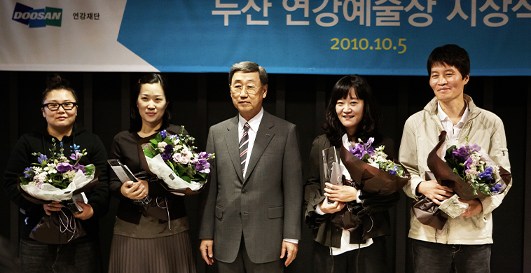
-
2010두산아트랩 시작공연 분야 만 40세 이하, 미술 분야 만 35세 이하
예술가들의 새로운 실험을 다양한 형식으로 지원합니다.한국프로듀서협회 선정
'올해의 프로듀서상' 수상공연문화발전에 공헌하고 공연기획부문에서 역량을
발휘한 프로듀서와 예술인(단체)에게 시상합니다.
공연 분야 젊은 예술가 양성의 공로를 인정 받아
수상했습니다.두산다문화 장학금 신설언어, 문화적 차이로 인해 어려움을 겪는
다문화가정 학생들이 공부에 흥미를 가지고 학업을
지속하는데 도움을 주기 위해 장학금과 학습지/동영상
강의/사전류의 지원을 시작했습니다. -
2011제3회 대한민국연극대상 '특별상' 수상한국연극협회가 2008년, 한국연극 100주년을
기념해 제정한 상입니다. 젊은 예술가 양성의
공로를 인정 받아 수상했습니다.두산 큐레이터 워크샵 시작한국 현대미술계에 새로운 시각을 제시할 젊은
큐레이터를 발굴, 지원합니다. 매년 3명의 큐레이터를
선정, 1년 동안 각 분야의 전문가들을 초청, 현대미술
이론과 현장에 대한 교육을 진행하고 공동기획 전시
기회를 제공합니다.
-->
-
2012제13회 메세나대상 '창의상' 수상한국메세나협회가 1999년 제정, 운영하는 메세나대상은
대한민국 예술 발전에 기여한 기업, 기업인을 발굴해
시상합니다. 공연, 미술 분야의 젊은 창작가를 발굴,
육성한 공로를 인정 받았습니다. -
2013두산연강장학생 멘토링 봉사활동 실시대학장학생들이 멘토가 되어 도움이 필요한 학생들을
지도함으로써 학습능력 향상 및 사교육비 경감에
도움을 주기 위한 멘토링 봉사활동을 시작했습니다.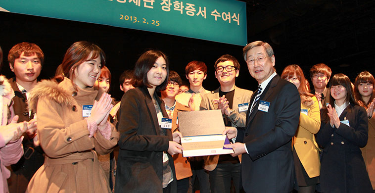
-
2013두산인문극장 시작매년 하나의 주제를 정합니다.
정해진 주제에 대한 공연, 전시, 강연 등을 통해 동시대를
살아가는 분들과 함께 생각해 보고자 기획한 프로그램입니다.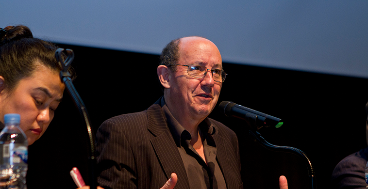
-
2013제5회 대한민국연극대상 '예술문화후원상' 수상한국연극협회가 2008년, 한국연극 100주년을 맞아 제정한
상입니다. 대한민국 순수 예술 연극계 발전에 이바지하고,
어려운 문화 사업을 후원한 공적이 큰 기업과 기업인에게
수여되는 공로상입니다. -
2019두산연강환경학술상 신설살기 좋은 환경을 만들기 위해 노력하는 연구자들에게
도움이 되고자 두산연강환경학술상을 신설했습니다.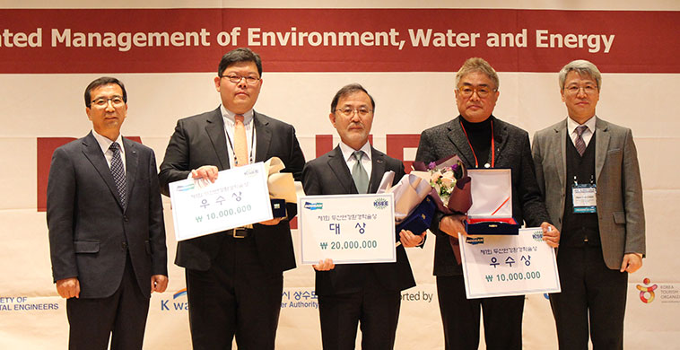
-
2019제56회 동아연극상 '특별상' 수상연극 예술 중흥을 목적으로 동아일보사가 1964년에 제정한
연극상입니다. 순수예술 분야 젊은 연출인들을 지원한 공로를
인정 받아 수상했습니다.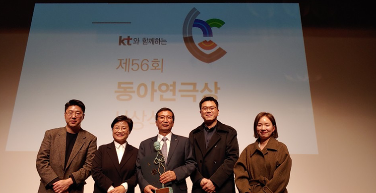